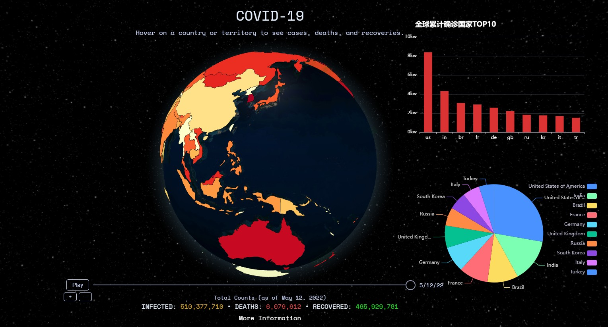
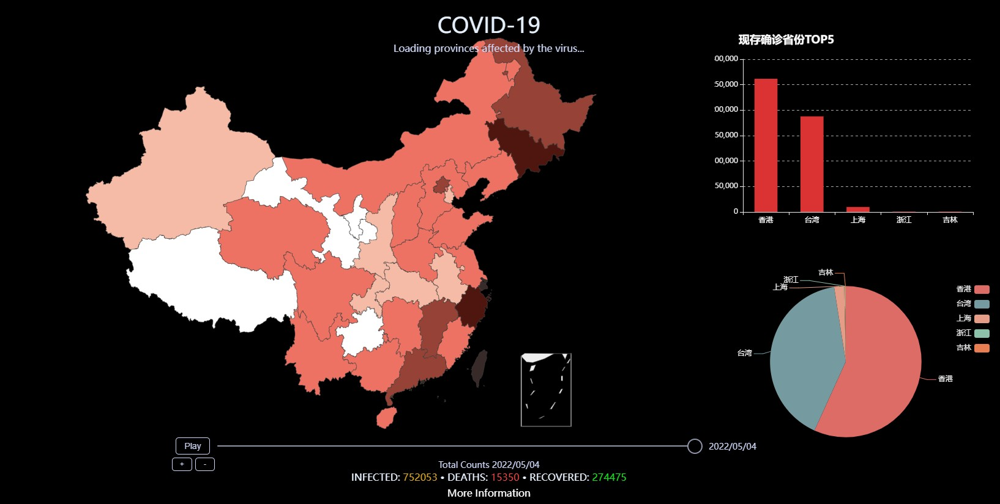
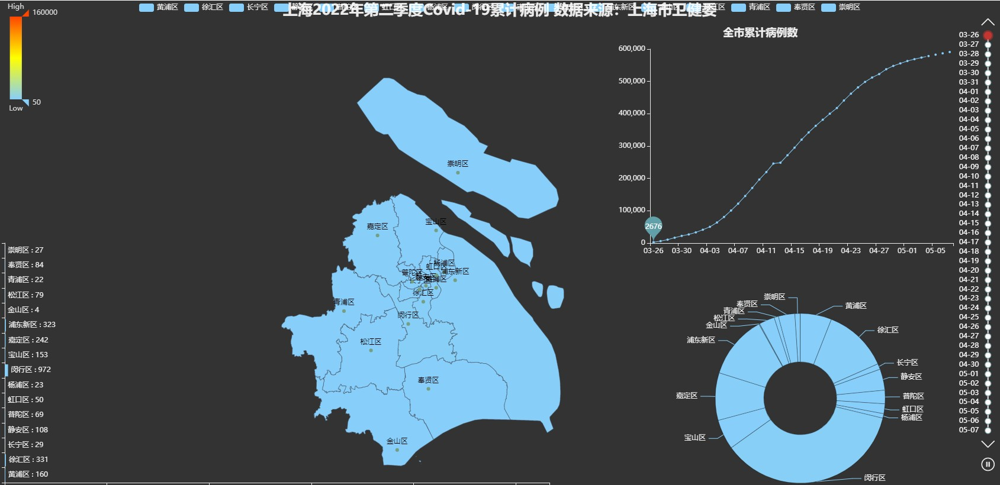
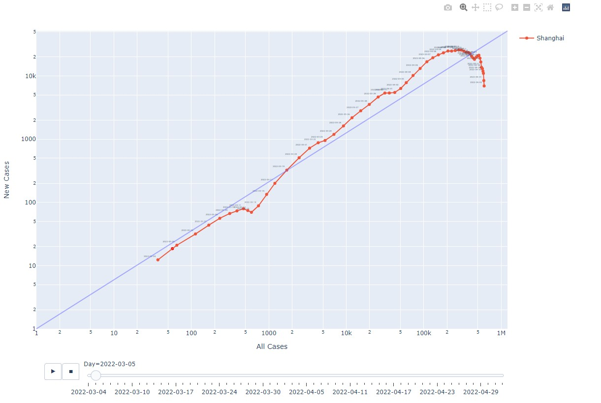
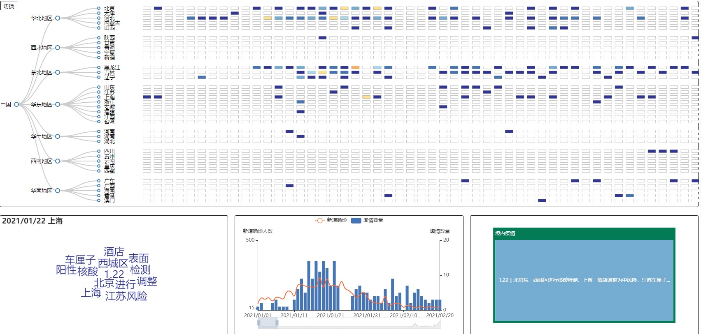

全球分析视图：
使用globe.gl的API生成3D的地球视图，右侧辅以条形图，饼图以辅助
中国分析视图:
使用echart实现中国地图和对应图表
上海分析视图:
使用python pyechart库实现上海地域可视化
上海分析图表:
使用较为新颖的总病例和每日新增病例作为横纵坐标分析上海地区感染人数，python plotly库实现
奥情分析视图:
使用D3，echart实现四个部分的绘图，分析新闻，舆论，谣言等，横向为时间，纵向为地区
新冠肺炎疫情时时刻刻牵动着世界人民的心,在这场没有硝烟的战争中,我们中间有这么一群人,他们或是抗击一线的紧急驰援的医疗队伍，或是向风暴中心前进的“神兵”，
或是社区门口值守的志愿者......他们，是平凡的你和我。他们，又是不平凡的战疫英雄。点点微光，汇聚大爱，他们用自己的责任和担当描绘出世界人民全力抗击新冠肺炎的努力图景。
在全球人民的努力下，中国已经开始全面复工复产，国家的经济秩序正在快速恢复，世界多地的疫情也在逐渐趋于稳定。让我们下定决心、保持耐心、充满信心，
用最好的状态来迎接这场“战疫”的全面胜利。